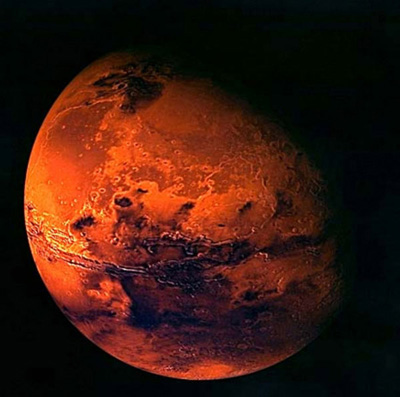

Es el cuarto planeta del Sistema Solar. Conocido como el planeta rojo por sus tonos rosados, los romanos lo identificaban con la sangre y le pusieron el nombre de su dios de la guerra.
El planeta Marte tiene una atmósfera muy fina, formada principalmente por dióxido de carbono, que se congela alternativamente en cada uno de los polos. Contiene sólo un 0,03% de agua, mil veces menos que la Tierra.
Los estudios demuestran que Marte tuvo una atmósfera más compacta, con nubes y precipitaciones que formaban rios. Sobre la superficie se adivinan surcos, islas y costas. Las grandes diferencias de temperatura provocan vientos fuertes. La erosión del suelo ayuda a formar tempestades de polvo y arena que degradan todavía más la superficie.
Antes de la exploración espacial, se pensaba que podía haber vida en Marte. Las observaciones demuestran que no tiene, aunque podría haberla tenido en el pasado.
En las condiciones actuales, Marte es estéril, no puede tener vida. Su suelo es seco y oxidante, y recibe del Sol demasiados rayos ultravioletas.
Cuando se halla más cerca de la Tierra, a unos 55 millones de kilómetros, Marte es, después de Venus, el objeto más brillante en el cielo nocturno. Puede observarse más fácilmente cuando se forma la línea Sol-Tierra-Marte (cuando está en oposición) y se encuentra cerca de la Tierra, cosa que ocurre cada 15 años.
El tono rojizo de su superficie se debe a la oxidación o corrosión. Las zonas oscuras están formadas por rocas similares al basalto terrestre, cuya superficie se ha erosionado y oxidado. Las regiones más brillantes parecen estar compuestas por material semejante, pero contienen partículas más finas, como el polvo.
A causa de la inclinación de su eje y la excentricidad de su órbita, los veranos son cortos y calurosos y los inviernos largos y fríos. Enormes casquetes brillantes, en apariencia formados por escarcha o hielo, señalan las regiones polares del planeta.
Se ha seguido el ciclo estacional de Marte durante casi dos siglos. En el otoño marciano se forman nubes brillantes sobre el polo correspondiente. Una fina capa de dióxido de carbono se deposita sobre el casquete polar durante el otoño y el invierno, al final del cual el casquete polar puede descender a latitudes de 45°. En primavera y al final de la larga noche polar, la parte estacional se va deshaciendo y muestra el casquete helado del invierno, que es permanente.
Además de las nubes de dióxido de carbono helado, en el planeta hay otros tipos de nubes. Se observan neblinas y nubes de hielo a gran altitud. Estas últimas son el resultado del enfriamiento asociado con las masas de aire que se alzan por encima de obstáculos elevados. Durante los veranos del sur son especialmente notables extensas nubes amarillas compuestas de polvo levantado por los vientos.
| Gravedad: | 3,711 m/s² |
| Radio: | 3.390 km |
| Masa: | 639E21 kg (0,107 Masa terrestre) |
| Superficie: | 144.798.500 km² |
| Duración del día: | 1d 0h 40m |
| Lunas: | Fobos, Deimos |